Coconut Shade Beach Coastline
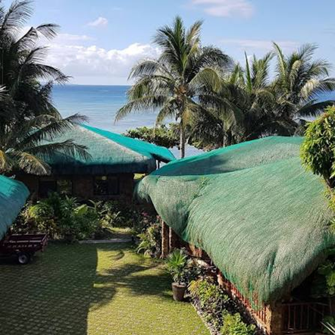
Located in Barangay Buenavista, Looc, Romblon, Coconut Shade Beach Resort offers visitors a relaxing
seaside atmosphere surrounded by tropical greenery and beautiful coastal scenery. The resort's
natural setting, shaded areas, and ocean views make it an appealing destination for travelers
seeking a break from busy city life.
Imagine spending a relaxing afternoon listening to the gentle sound of the waves, enjoying the sea
breeze, and watching the changing colors of the sky. Whether you are traveling with family, spending
time with friends, or looking for a quiet getaway, the resort provides an opportunity to slow down
and appreciate the simple beauty of island living.
Why visit?
- Enjoy a tropical beachfront atmosphere.
- Take memorable photos of the coastline and surrounding greenery.
- Spend quality time with family and friends.
- Experience the peaceful charm of coastal Looc.
Looc Municipal Town Plaza

The Looc Municipal Town Plaza represents the heart of local community life, offering a public space
where residents and visitors can gather, relax, and enjoy the atmosphere of the town. Like many
municipal plazas in the Philippines, it can reflect the community's culture, local traditions, and
everyday social activities.
As daylight fades, the town takes on a different character. Streetlights and illuminated
surroundings can create an inviting nighttime atmosphere, while the nearby streets provide a glimpse
of local life after a busy day. A visit to the plaza can complement a coastal itinerary by giving
travelers a chance to explore the town beyond its beaches and resorts.
For visitors interested in local culture, community spaces, and nighttime photography, the plaza
offers a different perspective on the charm of Looc.
Why visit?
- Experience the local atmosphere of the town proper.
- Explore a public gathering place and its surroundings.
- Capture evening photographs of the town.
- Appreciate the everyday life and community character of Looc.
Bantigue Resort
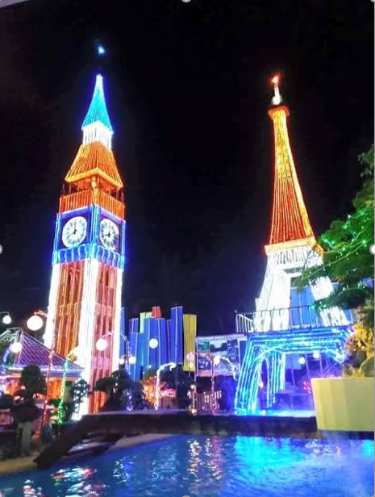
Located in Barangay Punta, Looc, Romblon, Bantigue Resort stands out for its distinctive Eiffel Tower
replica and Big Ben-inspired structure. These recognizable landmarks create an unusual sightseeing
experience in a tropical island setting, offering visitors a fun alternative to the usual beach
destinations.
The resort is especially appealing to travelers who enjoy taking photographs, discovering unique
attractions, and sharing memorable travel experiences. Its landmark-inspired structures provide
eye-catching backgrounds for individual portraits, group pictures, and travel documentation.
If the lighting features are operating during your visit, the illuminated structures in the evening
may offer a different visual experience from daytime sightseeing. Visitors should confirm current
access arrangements and operating conditions before traveling.
Why visit?
- See distinctive Eiffel Tower and Big Ben-inspired replicas.
- Take creative and memorable travel photographs.
- Enjoy a different type of attraction within Looc.
- Add a unique landmark destination to your island itinerary.
Cummings Highlads Campsite
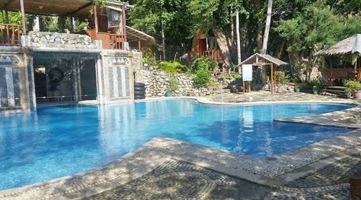
Cummings Highlands, also known in earlier tourism reports as Cummings Highland Eco Park and WaterFun,
is located in Barangay Tuguis, Looc, Romblon. It has been described as a recreational destination
featuring swimming facilities, cottages, and natural surroundings that provide a relaxing setting
for visitors.
For families and groups of friends, the campsite offers an opportunity to spend time outdoors, enjoy
recreational activities, and take a break from the demands of daily life. Its green surroundings and
open spaces can make the visit especially appealing to travelers who prefer a nature-oriented
destination rather than a crowded commercial attraction.
Whether you are planning a day trip or considering a longer stay, checking the current facilities,
availability, and reservation requirements in advance can help you make the most of your visit.
Why visit?
- Enjoy swimming and outdoor recreation.
- Spend quality time with family and friends.
- Appreciate the greenery and relaxing surroundings.
- Discover a nature-oriented leisure destination in Looc.
Looc Fish Sanctuary
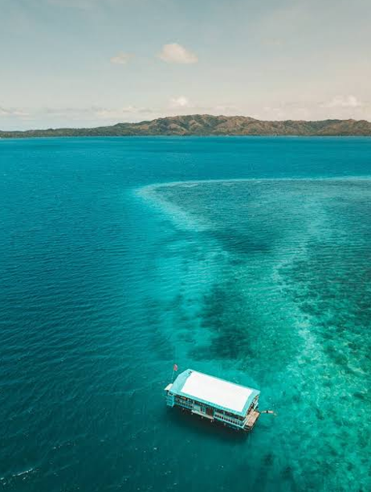
Located in the middle of Looc Bay, the Looc Fish Sanctuary is one of the municipality's best-known
ecotourism attractions. The protected marine area covers approximately 48 hectares of coral reef and
provides a habitat for various marine organisms. Visitors can travel by boat to a floating viewing
platform, where they can observe marine life through an opening in the deck. Snorkeling and other
permitted marine activities allow visitors to appreciate the underwater environment more closely.
This destination is especially appealing to nature lovers, families, and travelers who want to
experience the beauty of marine biodiversity. It also highlights the importance of protecting coral
reefs and preserving the marine resources that support local livelihoods.
Why visit?
- Observe colorful marine life in a protected area.
- Experience a boat trip across Looc Bay.
- Enjoy snorkeling, subject to local conditions and regulations.
- Learn about marine conservation and sustainable tourism.
Guinpasilan Island(Ginpasilan Islet)
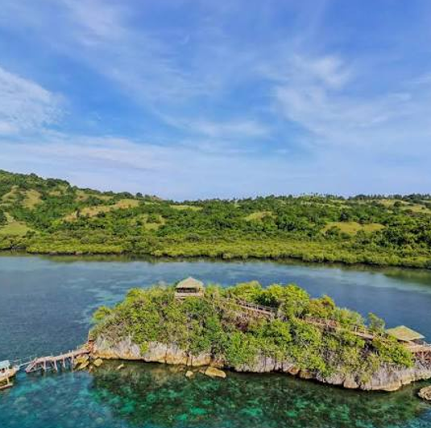
Ginpasilan Islet, located in Barangay Agojo, Looc, has been identified by the local government as an
emerging tourism attraction. Its island setting and surrounding coastal scenery make it an
interesting destination for visitors who want to explore beyond the town center and discover more of
Looc's natural landscape.
For travelers who appreciate scenic boat rides, coastal photography, and discovering less familiar
destinations, an excursion to the islet can offer a different perspective on island life. Because it
is a small island destination, visitors should arrange transportation with local boat operators and
confirm access conditions before visiting.
Why visit?
- Discover a lesser-known destination in Looc.
- Enjoy scenic views of the surrounding waters.
- Capture island and coastal landscape photographs.
- Experience a boat excursion organized by local operators.
Agojo and Buenaavesta Beaches
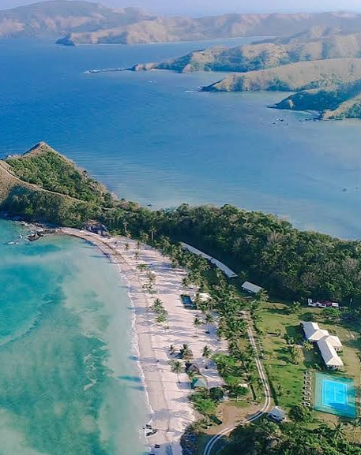
The coastal barangays of Agojo and Buenavista are among the areas associated with the seaside
scenery of Looc. These communities contribute to the municipality's coastal character, offering
opportunities to appreciate the natural environment and experience everyday life in a Philippine
island community. Beaches in these areas are also mentioned in travel references about Looc.
For visitors who enjoy discovering quieter coastal locations, exploring these areas can add variety
to a trip beyond the more established resorts. Depending on the specific shoreline, weather, and
local access conditions, travelers may enjoy sightseeing, photography, and relaxing by the sea.
Why visit?
- Discover coastal scenery outside the main town center.
- Enjoy opportunities for seaside photography.
- Experience the atmosphere of local fishing communities.
- Explore additional coastal areas around Looc Bay.
Villa M. My Exclusive Resort
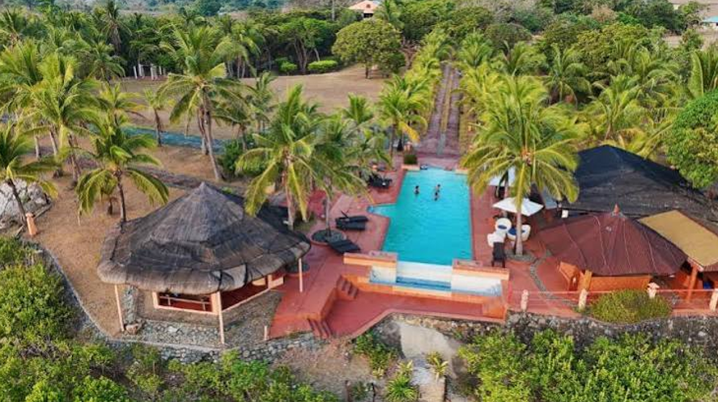
Villa M, My Exclusive Resort, is a distinctive resort destination in Barangay Camandag, Looc,
Romblon. It has been described as featuring Mediterranean-inspired architecture, lush tropical
gardens, coconut trees, flowering bougainvillea, and an infinity pool overlooking the surrounding
landscape.
The resort offers a different atmosphere from a typical beachfront destination, combining
architectural character with tropical scenery. Its landscaped surroundings and pool area make it
appealing to travelers who enjoy relaxing getaways, scenic photographs, and a more private resort
experience.
Why visit?
- Appreciate Mediterranean-inspired architecture.
- Enjoy tropical gardens and landscaped surroundings.
- Take photographs of the resort's distinctive design.
- Experience a relaxing resort atmosphere.
Port of Looc & Looc Bay Sunset
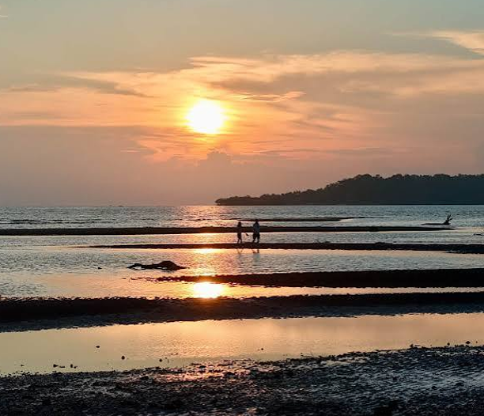
The Port of Looc is an important waterfront destination and a gateway to the surrounding coastal
attractions. Beyond its role in local maritime activities, the port offers visitors a glimpse of the
everyday life of a coastal community, where boats, fishermen, and the sea are closely connected. It
also serves as an access point for trips to the Looc Bay Marine Refuge and Sanctuary.
As the afternoon turns to evening, the bay becomes an inviting setting for travelers who appreciate
peaceful waterfront scenery. The warm glow of the setting sun, the silhouettes of boats, and the
expansive sea can create a memorable backdrop for photographs and quiet moments of reflection.
For photographers and nature lovers, visiting near sunset can be a wonderful way to appreciate the
coastal character of Looc, provided that weather and local conditions are favorable.
Why visit?
- Capture beautiful harbor and seaside photographs.
- Experience the atmosphere of a traditional coastal community.
- Enjoy the scenery around Looc Bay.
- Use the port as a starting point for marine sanctuary excursions.
Looc Port Lighthouse
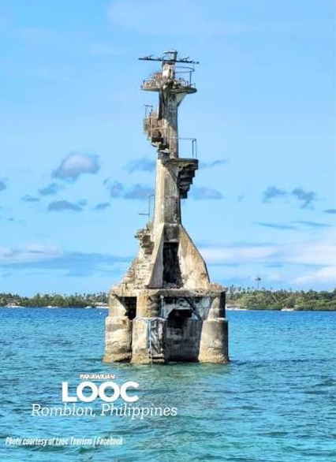
The Looc Port Lighthouse is a waterfront landmark near Looc Pier. It complements the port's maritime
scenery and provides another subject for photography beyond the usual beach and resort views. The
port area also serves as the departure point for visitors heading to Looc Bay's marine sanctuary.
For travelers interested in coastal infrastructure and local maritime life, the lighthouse and
surrounding waterfront can be included in a short sightseeing stop. Since it is associated with a
working port, visitors should respect restricted areas and follow local safety guidance.
Why visit?
- Photograph a coastal navigation landmark.
- Enjoy views of the waterfront and port.
- Learn about the role of the harbor in local transportation.
- Combine the stop with a trip to Looc Bay.
Looc's Small Waterfall and Freshwater Streams
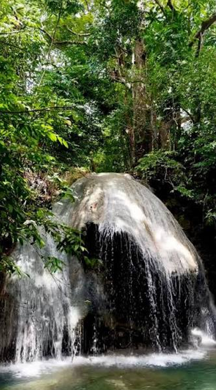
Beyond its coastline, Looc has been described in coastal resource management references as having
natural features such as creeks, rivers, caves, and a small waterfall. These inland environments
provide a contrast to the municipality's beaches, marine sanctuaries, and resorts.
For visitors who enjoy nature photography and outdoor exploration, freshwater streams and small
waterfalls can offer opportunities to appreciate the area's vegetation, flowing water, and peaceful
surroundings. However, the specific waterfall and stream locations need to be confirmed with the
local tourism office before they can be recommended as established tourist destinations.
Why explore?
- Discover natural scenery beyond the coastline.
- Photograph freshwater landscapes and tropical vegetation.
- Appreciate the diversity of Looc's natural environment.
- Consider an outdoor excursion with local guidance.
Kapihan Peak - Hiking and Scenic Viewpoint
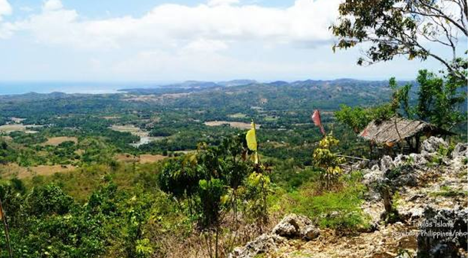
Kapihan Peak is a scenic hiking destination in Looc, Romblon, offering visitors an opportunity to
enjoy the island’s natural landscapes from an elevated viewpoint. It is described as a
beginner-friendly uphill hike near the town proper, making it a good choice for travelers who want
an outdoor adventure beyond the coastline.
Why Visit?
- Enjoy a short hiking adventure.
- Experience the peaceful atmosphere of the island’s highlands.
- Capture scenic nature photographs.
- Explore a different side of Looc beyond its beaches.